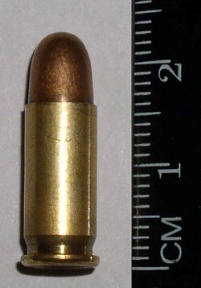

HOME
LIST
SHOP
This is a list of firearm cartridges which have bullets of a caliber between 6 millimetres (0.236 in) and 6.99 millimetres (0.275 in). Length refers to the cartridge case length OAL refers to the overall length of the cartridge
